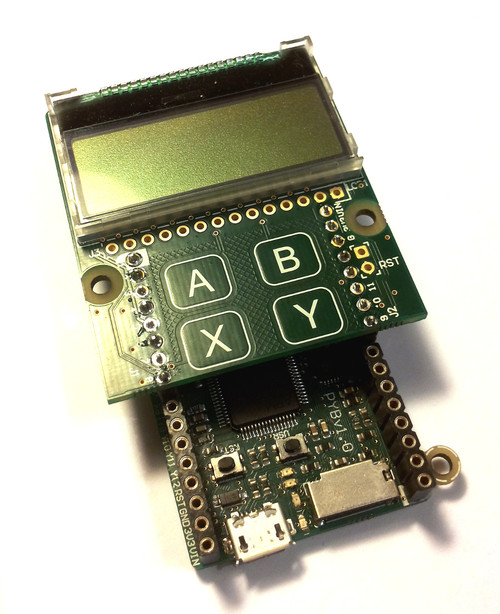

3. LCD和触摸传感器¶
焊接和使用LCD和触摸传感器。
{kind=link}

下面的视频展示了如何将顶盖焊接到LCD面板上。 在视频末尾，您将看到怎样将LCD面板正确连接到pyboard。
面板上组件的电路图和数据手册，请参见 The pyboard 硬件.
3.1. 使用LCD¶
开始启用LCD，请在MicroPython提示符中尝试以下指令。请确保LCD面板连接到pyboard的方式如此页面顶部图片中所示相同。
>>> import pyb
>>> lcd = pyb.LCD('X')
>>> lcd.light(True)
>>> lcd.write('Hello uPy!\n')
您可使用此代码制作简单动画:
import pyb
lcd = pyb.LCD('X')
lcd.light(True)
for x in range(-80, 128):
lcd.fill(0)
lcd.text('Hello uPy!', x, 10, 1)
lcd.show()
pyb.delay(25)
3.2. 使用触摸传感器¶
读取触摸传感器数据，您需使用I2C总线。MPR121电容式触摸传感器的地址为90。
请尝试以下指令开始:
>>> import pyb
>>> i2c = pyb.I2C(1, pyb.I2C.MASTER)
>>> i2c.mem_write(4, 90, 0x5e)
>>> touch = i2c.mem_read(1, 90, 0)[0]
上述第一行实例化一个I2C对象，第二行启用4个触摸传感器。第三行读取触摸状态， touch 变量保存了4个触摸按钮的状态（A、B、X、Y）。
此处
提供一个可使您设置阈值和去抖参数以及轻松读取触摸状态和电极电压水平的简单驱动。
将此脚本复制到您的pyboard（Flash或SD卡，在顶层目录或 lib/ 目录），然后尝试:
>>> import pyb
>>> import mpr121
>>> m = mpr121.MPR121(pyb.I2C(1, pyb.I2C.MASTER))
>>> for i in range(100):
... print(m.touch_status())
... pyb.delay(100)
...
这将持续打印所有电极的触摸状态。尝试依次触摸每个。
注意：若您将LCD面板置于Y方向，那您需要使用以下代码初始化I2C总线:
>>> m = mpr121.MPR121(pyb.I2C(2, pyb.I2C.MASTER))
此处也提供同时使用LCD和触摸传感器的演示，可在此获取： here.